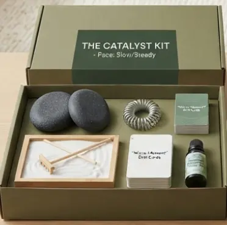
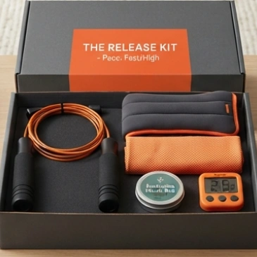
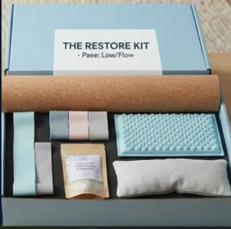

Products

Our catalog is anchored by three targeted setups: Catalyst Kit, Release Kit, and Restore Kit.
These kits contain tools that can be used when you need to rest, exercise or get energized.
Each kit contains items crafted out of sustainable components (like premium American walnut wood or natural cork options) to assist remote workers and busy individuals in gaining rapid, physical access to ergonomic wellness equipment right at their desks.
Catalyst Kit

- The Desktop Zen Sandbox A premium machined walnut tray with fine white sand, a miniature rake, and smooth obsidian skipping stones for tactile grounding.
- Acupressure Massage Ring A flexible metal spring ring designed to roll up and down fingers to stimulate circulation and stop anxious fidgeting.
- "Serene Jackrabbit" Mini Deck A compact deck of 20 physical cards containing 1-minute daily mental health focus challenges.
- Clarity Aromatherapy Rollerball A 10ml essential oil blend of eucalyptus, peppermint, and rosemary designed to spark immediate focus.
Release Kit

- Ergonomic Agility Jump Rope A high-speed, tangle-free weighted cable rope with sleek matte black handles for short, efficient cardio bursts.
- The Quantum Focus Interval Timer A compact, magnetic digital timer with a high-contrast orange housing that vibrates silently to prompt movement breaks.
- Weighted Wrist Wraps & Towel Sleek, low-profile wrist weights to increase workout exertion, paired with a quick-dry microfiber cooling cloth.
- Soothing Muscle Balm An all-natural, tin-packaged cooling balm infused with menthol and arnica for post-workout recovery.
Restore Kit

- Natural Cork Yoga Roller An eco-friendly, firm roller made from sustainably sourced cork, designed for deep tissue alignment and posture correction.
- Acupressure Foot Mat A textured, compact mat that stimulates reflexology points on feet to naturally boost energy while standing at a desk.
- Resistance Band Set A trio of pastel-colored, premium fabric resistance bands (Light, Medium, Heavy) for low-impact mobility stretching.
- Herbal Lavender Eye Pillow A weighted flaxseed and organic lavender-filled eye pillow to aid deep relaxation, box-breathing, or power naps.
Each kit has products which are made out of sustainable products. (like American walnut wood) These products are created to help individuals use the equipment available to them for quick access.
It is sometimes hard for individuals to practice daily fitness routines because of busy schedules. One way to stay persistent in our fitness goals is by using the "Serene Jackrabbit" Mini Deck. These cards have quick and actionable tasks with mental health challenges or physical agility drills. You can use these cards and do as many as you like if you don't know which activity to do on a certain day.